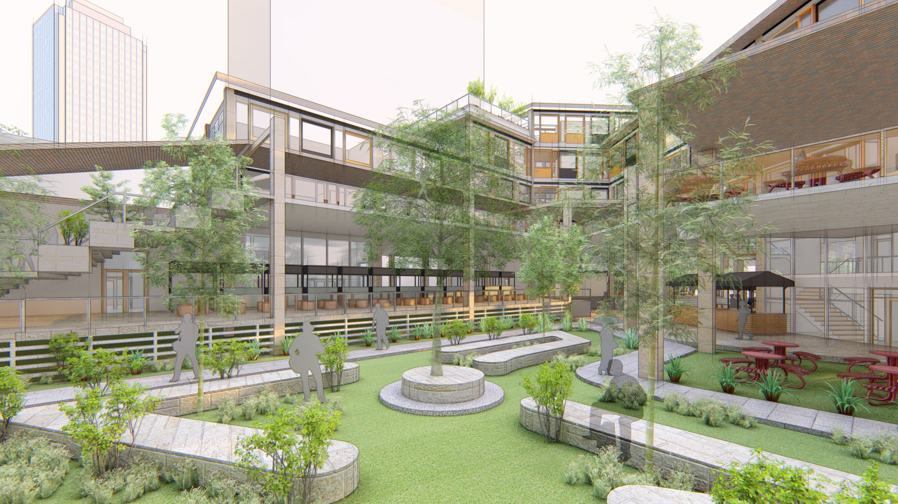

context
individual thesis project
university belt area, sampaloc, manila
software
Revit
SketchUp
ArchiCAD
Lumion 8
Adobe Photoshop
date
2020
➜approach perspective
background
The University Belt has always been known to be the center of different universities and colleges. With the rapid rise in the number of students in the city to study, there is no doubt that a significant rise in
commercial establishments can also be observed.
problem
➜image of the city
While the university belt area is known to be the center of education in Manila, few people really know the specific area it takes up. This is due to the lack of legibility and identity of the area which
can be further developed. Another problem is the disconnect of the area going from the lower Sampaloc district, extending to Roxas Boulevard area. Also, with the rapid rise in commercial facilities and the influx of students, it is
determined that there not enough establishments to cater to students.
The main goal of the project is to create a replicable facility which will cater to students' basic, educational, and recreational needs. This can be achieved with merging three main spaces.
➜massing development study
Influenced by the context and site analysis, the initial massing was done by integrating the basic spaces which gave importance to the students as the main users.
strategy 1 - establishing nodes
➜blue - schools / orange - proposed nodes
By incorporating nodes, we can connect the area and establish it as the University Belt. These nodes can also serve as identifiers that the area is within the University Belt.
➜schematic colors for legibility and identifiability
To achieve legibility, the designer proposed the use of different colors to differentiate each node while maintaining the identity of a community node in the University Belt.
strategy 2 - student center
The main facility will be an educational facility which students from different schools can use this space is more commonly known as a learning commons where active, quiet, and technology zones are
found.
➜student collaborative spaces
➜interior perspectives
Different study set-ups will be used depending on the zone. Group tables will be used for collaborative spaces while individual nooks will be used for quiet spaces.
strategy 3 - university-city relationship
Due to the rise of businesses in the area to cater to the students' needs, the facility can accommodate these small businesses to activate the node areas. - Coexistence between the students and residents of the area
can be established as part of the development of each node.
➜stalls for small businesses

➜recreational spaces
➜site features